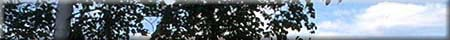
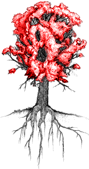
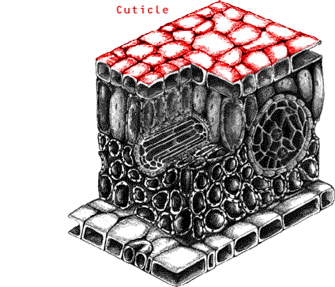

|
  Parts of a Tree - LeavesLeaves are the food factories of the tree. Powered by sunlight, the green substance in leaves called chlorophyll uses carbon dioxide and water to produce carbohydrates. This process is called photosynthesis . The word photosynthesis comes from two Greek words: 'photos' meaning light and 'synthesis' meaning putting together.
During photosynthesis, oxygen is released into the atmosphere through tiny pores called stomata. Water is also released from these pores in a process called transpiration. In one day, a large tree will release enough water vapour to produce 1300 liters of water. This is enough to provide more than four days worth of water for the average person. In this way, trees act like giant air conditioners, cooling the air with water vapour and expelling oxygen, which we need to breathe.
Did you know:
|
